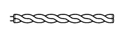
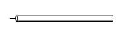
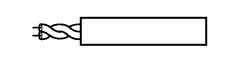

MULTIPLEX COMMUNICATION SYSTEM > GENERAL |
| OUTLINE |
The multiplex communication system uses the following 4 communication protocols:
The Controller Area Network (CAN) is used for communication between the engine, chassis, and body electrical system.
The Local Interconnect Network (LIN) is used for communication within the body electrical system.
The AVC-LAN is used for communication only between the Audio Visual (AV) system components.
The Media Orientated System Transport (MOST) is used for communication within the Audio Visual (AV) system components.
The CAN has 2 types, with different communication speeds: the HS-CAN (high speed) and the MS-CAN (medium speed).
The power management control ECU and main body ECU are used as gateways to transmit data between the buses.
| MAIN FEATURES |
Multiplex communication uses serial communication data that consists of bits and frames in order to exchange information between the various ECUs. This allows a reduction of the amount of wiring used in the vehicle.
A bit is the basic unit of communication used to represent the information. A bit is represented by binary values of "0" or "1".
A frame is a body of data transmitted together. A frame contains a header that indicates the beginning, and an end message that indicates the end.
Differences between CAN, LIN, AVC-LAN and MOST
The protocols, which are the rules for establishing data communication, differ between CAN, LIN, AVC-LAN and MOST. If the ECUs in the networks use different data frameworks such as communication speed, communication wire or signals, they will be unable to understand each other. Therefore, protocols (rules) must be established among them.
Compared to LIN and AVC-LAN, CAN features high-speed data transmission. Therefore, CAN is able to transmit larger amounts of data faster than other protocols. This feature makes it possible to transmit data accurately for the powertrain and chassis control systems. These systems require large amounts of data to be transmitted in short periods of time.
MOST is used to transmit control information, audio, video, and data in real time.
| Protocol | CAN (ISO Standard) | LIN (LIN Consortium) | AVC-LAN (TOYOTA Original) | MOST |
| Communication Speed | 500 kbps*/HS-CAN 250 kbps*/MS-CAN (Max. 1 Mbps*) | 9.6 kbps* (Max. 20 kbps*) | Max. 17.8 kbps*/AVC-LAN 7.5 Mbps*/AVC-LAN plus | Max. 50 Mbps* |
| Communication Wire | Twisted-pair Wire | AV Single Wire | Twisted-pair Wire | Shielded Twisted-pair Wire |
| Drive Type | Differential Voltage Drive | Single Wire Voltage Drive | Differential Voltage Drive | |
| Data Length | 1-8 Bytes (Variable) | 2, 4, 8 Bytes (Variable) | 0-32 Byte(s) (Variable) | 0-128 Byte (Variable) |
Communication Wire
A twisted pair of wires is used for CAN and AVC-LAN communication. A single Automobile Vinyl (AV) wire is used for LIN communication.
| Communication Wire | Outline | |
| Twisted-pair Wire |  | This communication wire is a pair of twisted wires. Communication is driven by applying different voltages to the 2 lines in order to send a single signal. This system, which is called a "Differential Voltage Drive", reduces noise. |
| AV Single Wire |  | This is a lightweight single communication wire that consists of a single core line surrounded by insulation. Voltage is applied to this line in order to drive communication, and this system is called a "Single Wire Voltage Drive". |
| Shield Twisted-pair Wire |  | This communication wire is a shielded pair of twisted wires. Communication is driven by applying different voltages to the 2 lines in order to send a single signal. This system, which is called a "Differential Voltage Drive", reduces noise. |